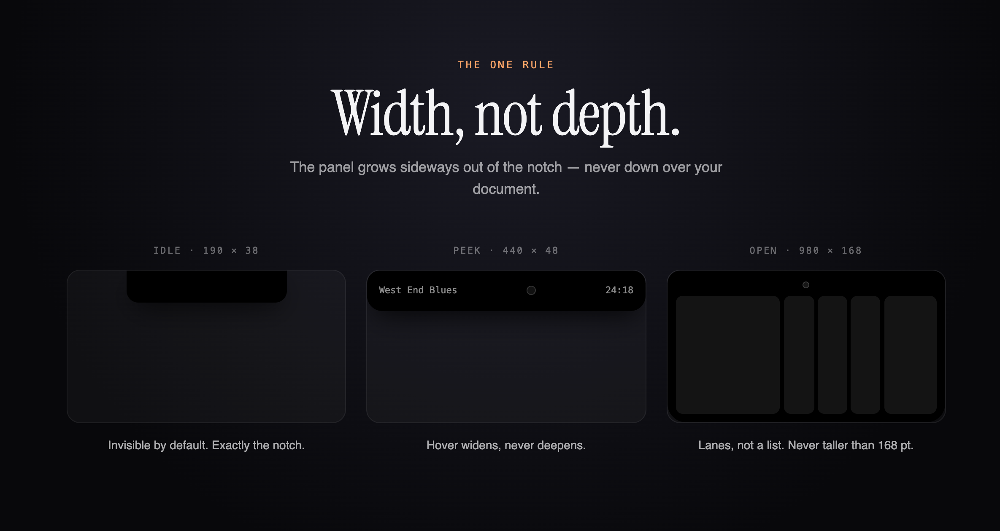
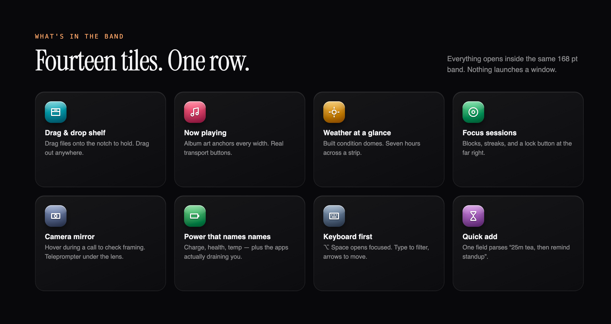
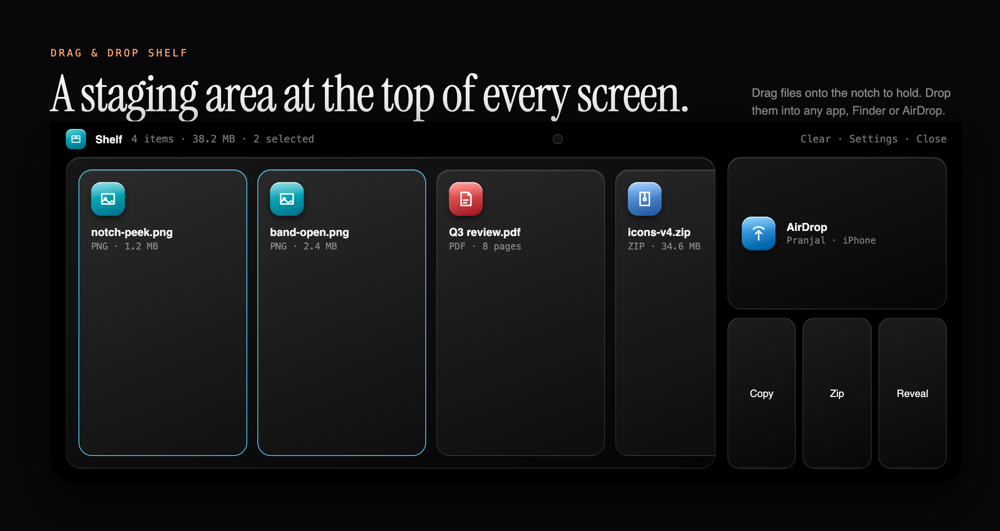
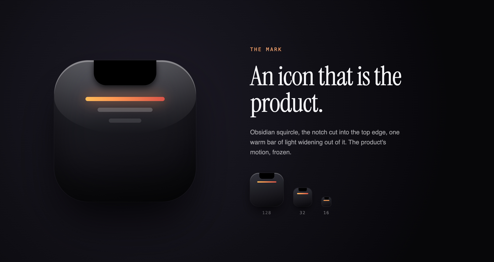

NOTCH
ISLAND
The MacBook notch is dead space. NotchIsland turns it into a 168 pt band of tools — shelf, now playing, focus, weather, battery — that grows sideways, never down over your document.
THE PROBLEM
EVERY NOTCH APP DROPS A PANEL OVER YOUR WORK.
Existing utilities treat the notch as a menu-bar button: click, and a tall popover covers the document you were reading. The notch deserved its own geometry.
THE ONE RULE
Idle is exactly the notch (190×38). Hover peeks to 440×48. Open is 980×168 — lanes, not a list. Nothing is ever taller than 168 pt.

THE BUILD
FOURTEEN TILES. ONE BAND.

Idle → peek → open is a single reducer. Hover intent is debounced so a mouse crossing the notch never flickers the panel.
Tiles lay out horizontally in fixed-height lanes. A tile that needs more room asks for width, never height.
⌥ Space opens focused. Type to filter, arrows to move, Esc collapses. Mouse is optional.
Now playing, battery and weather poll on independent cadences; each tile owns its refresh so the band never blocks.
FEATURE DEEP-DIVE
A STAGING AREA AT THE TOP OF EVERY SCREEN.
Drag files onto the notch to hold them. Multi-select, then Copy, Zip, Reveal or AirDrop straight from the band. The shelf shows size and selection count so you always know what you're carrying.


THE STACK
THE IMPACT
Fourteen daily utilities collapsed into a space that used to be a black rectangle — with your document never covered once.
WHAT I'D TELL A CLIENT
Constraints make products. One geometric rule — never taller than 168 pt — made every subsequent design decision obvious and kept scope honest.